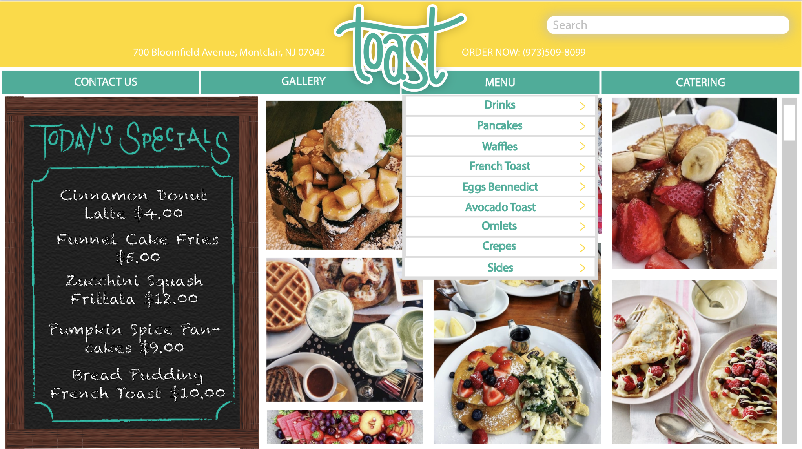
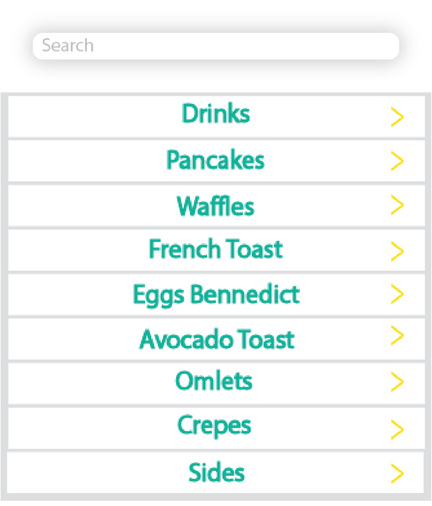
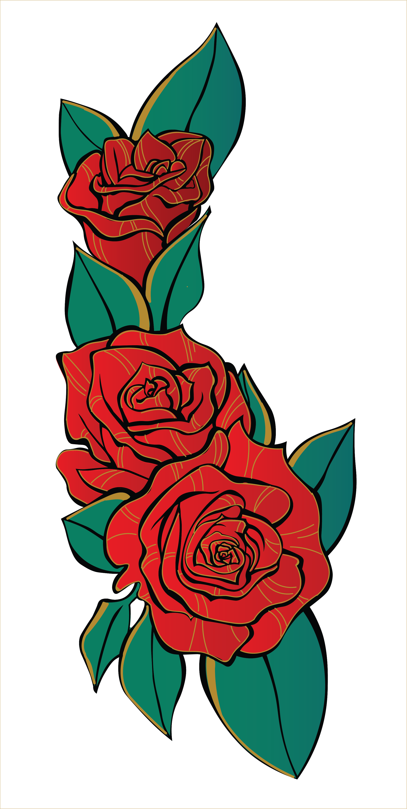
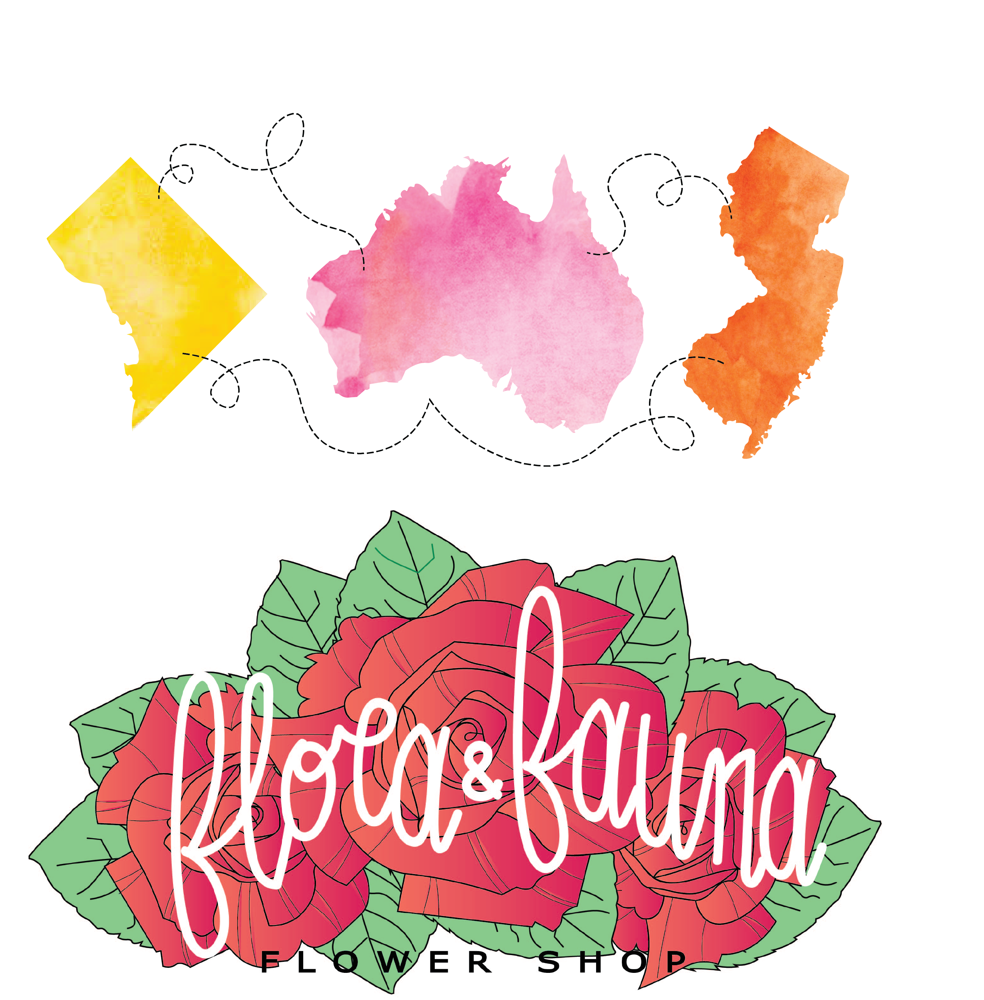
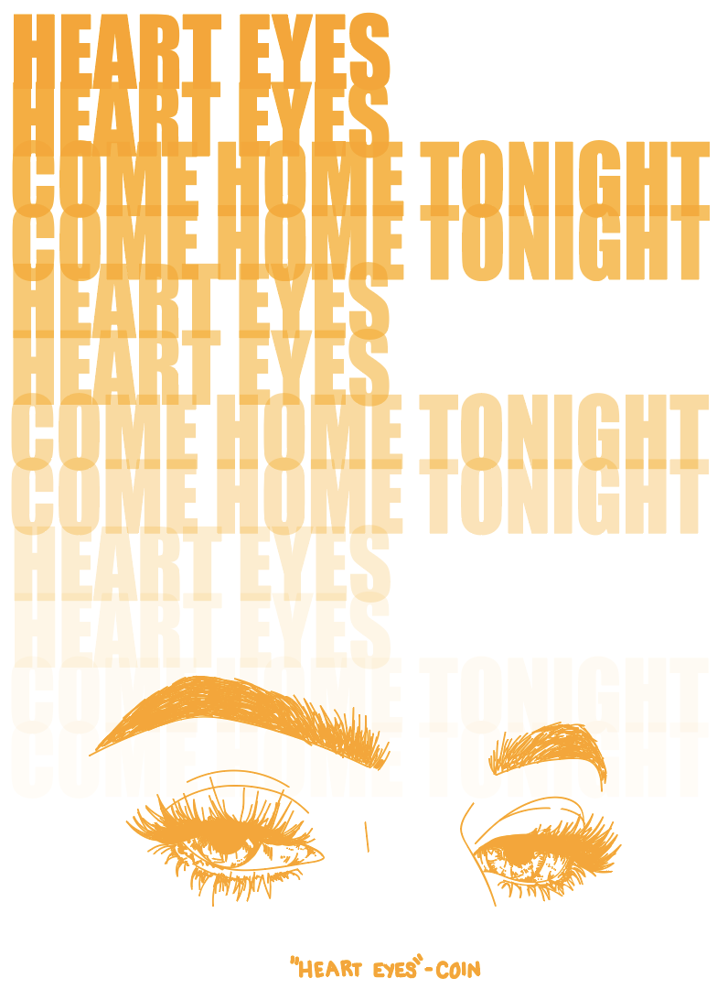

ILLUSTRATOR
Mockup and Assets
~ I do not own any of the photos used in this piece, however, I did
all of the graphics and layout


Micellaneous



Premiere Pro
This assignment was simply to make a 4 minute video using premiere pro as
an editor. For my video I made a short film and focused mainly on editing
the video to match the beats and tempo of the song used as audio.
Rough draft:
Click me!
Final Project:
Click me!
~ I do not own the rights to the songs used in the videos this
video was made for educational purposes